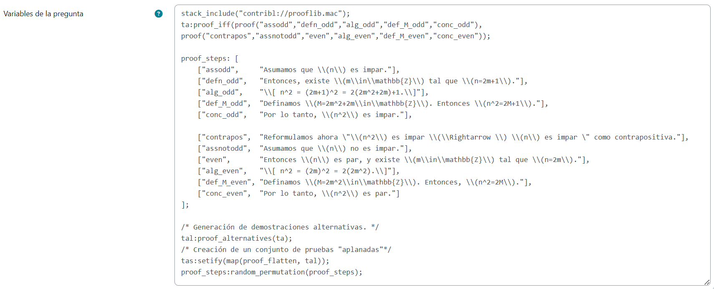
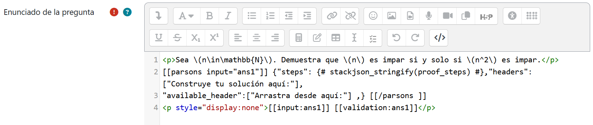
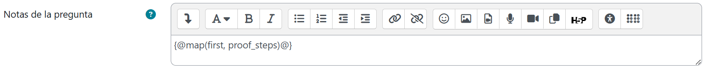
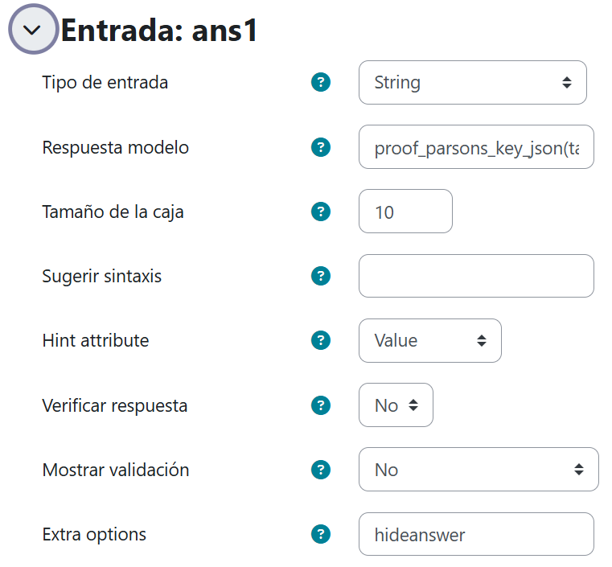
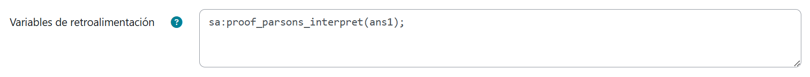
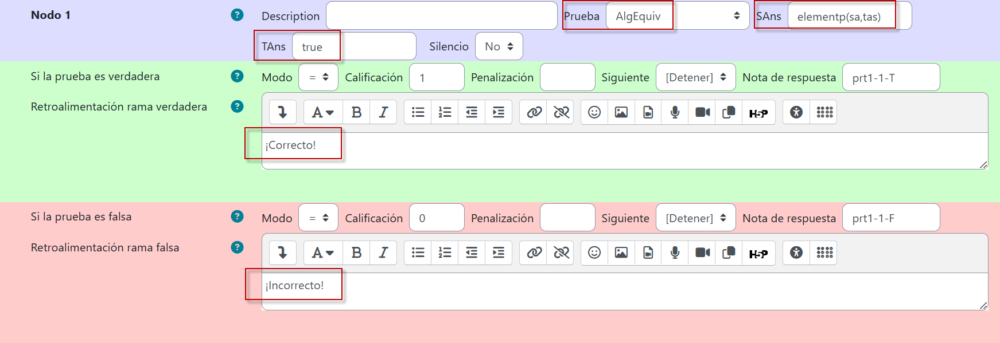
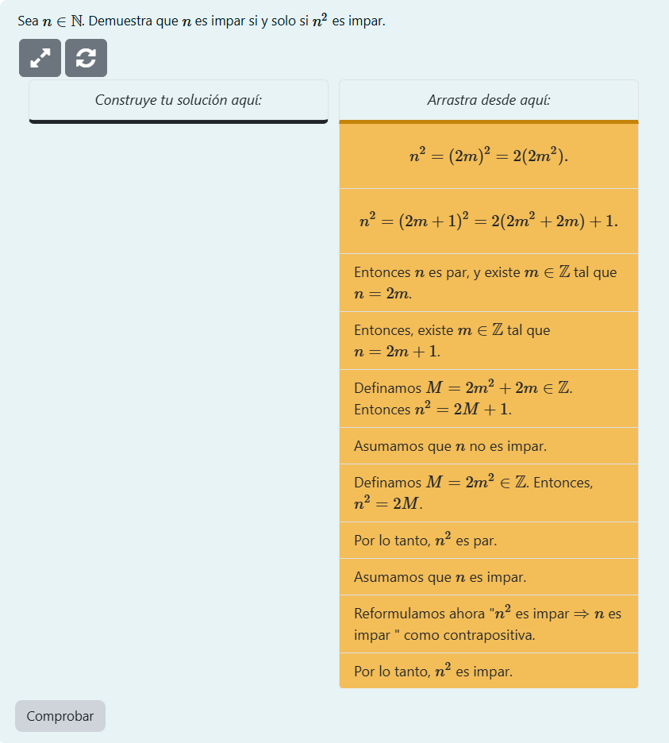
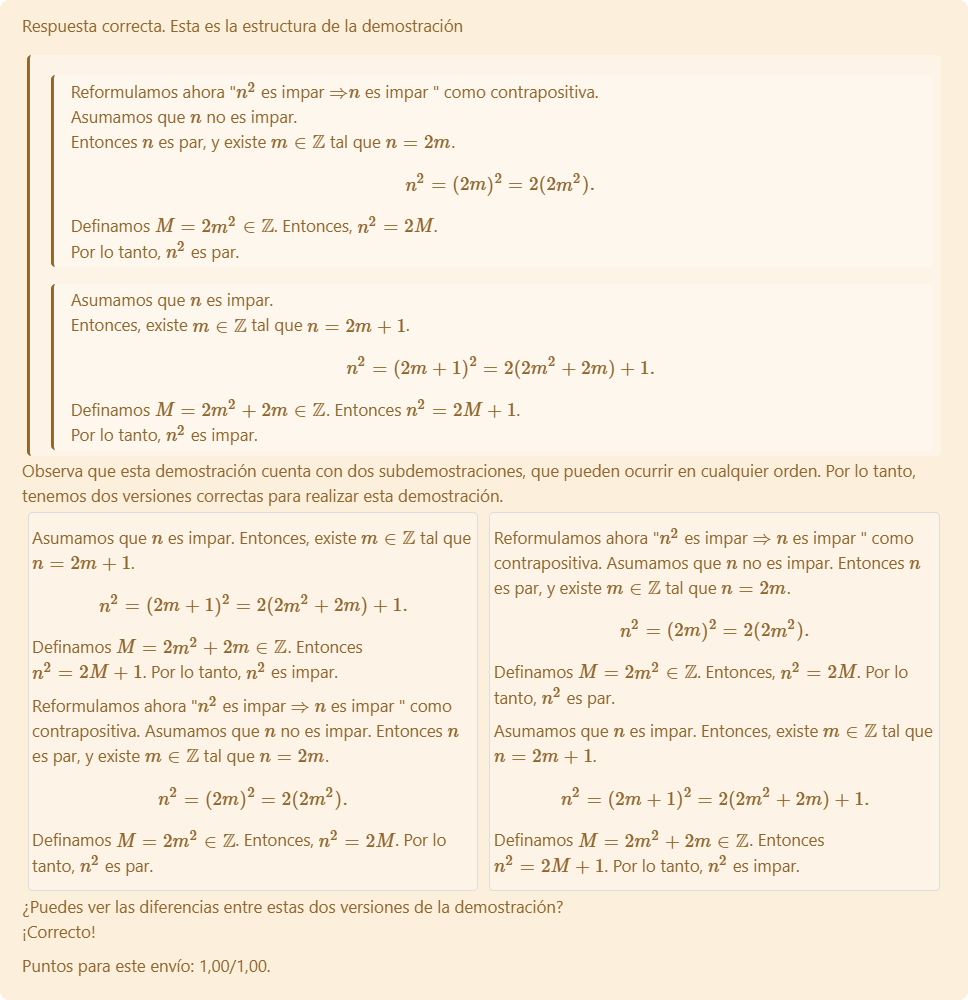

Prueba directa o a partir de la contrapositiva
En matemáticas, especialmente en demostraciones, los problemas de Parson no siempre tienen una única respuesta correcta. Esto genera dificultades a la hora de determinar qué se considera una respuesta válida en casos específicos, así como en el desarrollo de herramientas de autoría que permitan la creación de problemas con algoritmos de evaluación fiables.
Por ejemplo, en la demostración de:
A si y solo si B
Podríamos esperar o requerir dos bloques separados y bien definidos:
- Suponer A, …, por lo tanto B.
- Suponer B, …, por lo tanto A.
El orden en el que se presenten estas dos sub-demostraciones es, en general, irrelevante. La estructura de la demostración si y solo si permite que sus dos sub-demostraciones sean conmutativas, del mismo modo que A = B y B = A son equivalentes. Existen bloques dentro de una demostración cuyo orden puede cambiar. Además, dado que las demostraciones suelen estar organizadas en bloques anidados, estas sub-demostraciones pueden tener diferentes opciones aceptables de validez.
STACK proporciona "funciones de construcción de demostraciones" con argumentos. Por ejemplo, una demostración si y solo si se representaría como proof_iff(A,B), donde A y B son sub-demostraciones o cadenas de texto que se muestran al estudiante. Presentaremos a continuación un ejemplo de ello:
Supongamos que deseamos que el estudiante demuestre que \(n\) es impar si y solo si \(n^2\) es impar. En Variables de la pregunta capturaremos el siguiente texto. No te preocupes: al final de esta sección puede puedes descargar dicho código, copiarlo y pegarlo.

El resultado arrojado por el comando tal:proof_alternatives(ta); se almacenará en la variable tal, misma que será una lista de ambas opciones para la prueba de si y solo si. proof_alternatives recorrerá todas las subpruebas. Luego "aplanamos" cada una de estas pruebas a un conjunto de pruebas basadas en listas con tas:setify(map(proof_flatten, tal));
Con base en la sintaxis mostrada en el ejemplo de la sección previa, capturaremos lo siguiente en Enunciado de la pregunta:

Y, al igual que hicimos antes, no olvidaremos colocar el siguiente CasText en las Notas de la pregunta para indicar el orden de las claves.

Ahora, en la Entrada, nos aseguraremos de capturar proof_parsons_key_json(ta,proof_steps) en Respuesta modelo y de elegir lo siguiente:

En Variables de retroalimentación nos valdremos del intérprete de la cadena JSON (como hicimos antes, en el ejemplo previo):

Y configuraremos el Árbol de respuestas potenciales así:

En esta ocasión, mediante elementp(sa,tas), la prueba de equivalencia algebraica se centra en determinar si la respuesta del alumno se encuentra dentro de la lista de posibles respuestas indicadas por el profesor.
Luego de guardar los cambios, el reactivo STACK debe verse así:

Al arrastrar todos los enunciados y soltarlos en el orden correcto, se presentará la siguiente retroalimentación con el afán de hacerle notar al estudiante no solo si ha acertado, sino también la estructura de la demostración. Se trata de una demostración con dos subdemostraciones cuyo orden es irrelevante para darla por válida. Notemos que no hemos sido nosotros quienes hemos capturado esta retroalimentación: ¡STACK la ha hecho automáticamente por nosotros!
